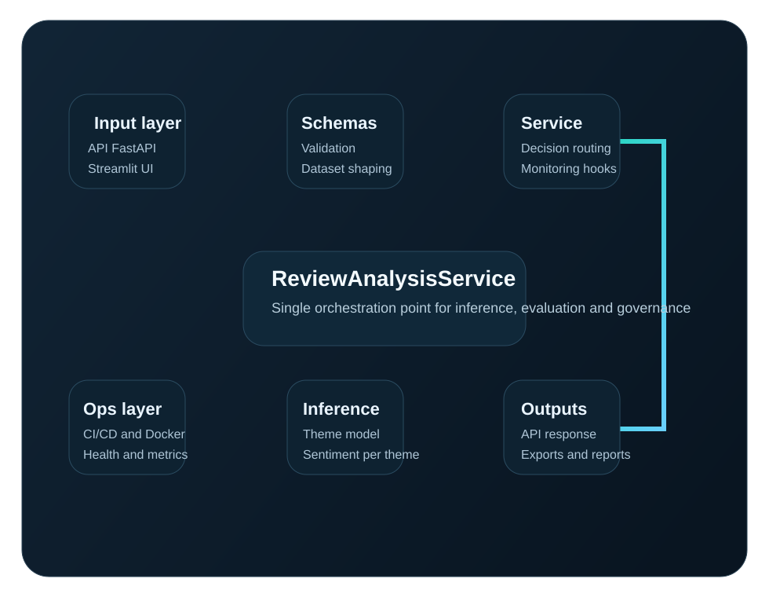
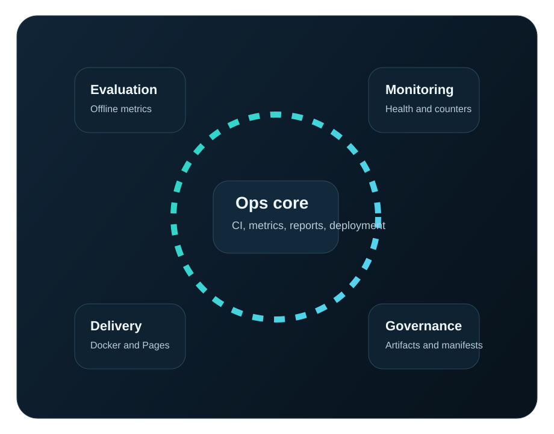

Valeur business
Un moteur de lecture operationnelle, pas juste un classifieur.
Le coeur du produit est simple: reduire le temps entre la voix du client et l'action. Review Insights+ ne se contente pas d'etiqueter un texte. Il restitue des signaux utilisables pour arbitrer, escalader et monitorer.
Priorisation intelligente
Les signaux sont organises par sujets metier concrets et les cas peu confiants sont remontes pour revue humaine.
Interpretabilite operationnelle
Chaque sortie expose theme, sentiment, confiance, evidence hints et texte actionnable.
Base exploitable
API-first, artefacts versionnes, tests, workflows CI/CD et trajectoire claire vers l'industrialisation.
Fonctionnalites
Une plateforme qui sert a la fois l'analyse instantanee et l'exploitation continue.
Architecture reelle
Une chaine de prediction explicite, modulaire et gouvernable.
L'architecture se compose d'une couche d'entree, d'un service metier central, d'un backend modele multi-etapes, puis d'une couche de sortie et de supervision.
- Input layerAPI FastAPI et interface Streamlit pour l'analyse unitaire et batch.
- Validation and shapingSchemas Pydantic, normalisation et preparation dataset.
- Decision serviceReviewAnalysisService orchestre inference, evaluation et monitoring.
- Inference pipelineClassification thematique puis modeles de sentiment specialises par theme.
- Governance layerScore global, score par theme, evidence, insights et human review.
- Ops layerMetrics, healthcheck, evaluation, reporting, CI, Docker et Pages.

Pipeline de traitement
Du texte brut a l'insight metier.
Use cases
Ce que le produit permet de faire des le premier jour.
Voice of Customer cockpit
Suivre les sujets dominants et exposer les zones d'irritation qui menacent satisfaction et retention.
Product feedback triage
Distinguer les plaintes logistiques des vrais signaux produit pour mieux prioriser la roadmap.
Support escalation intelligence
Remonter les reviews liees au SAV et industrialiser les exports vers des workflows operationnels.
Readiness technique
Ce qui rassure un CTO: gouvernance, exploitabilite et trajectoire.

Deployment ready
Dockerfile, compose, workflow CI et pipeline Pages pour des sorties reproductibles.
Model governance
Manifest d'artefacts, backend selectionne automatiquement, evaluation batch et rapports versionnables.
Secure by default
API key optionnelle, trusted hosts, CORS, payload limits et headers de securite.
Scalable foundation
Service stateless, separation des couches et chemin clair vers retraining, drift et observabilite externe.
Questions de leadership